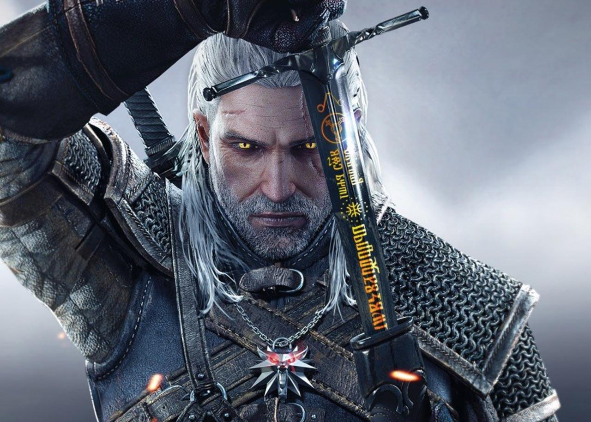
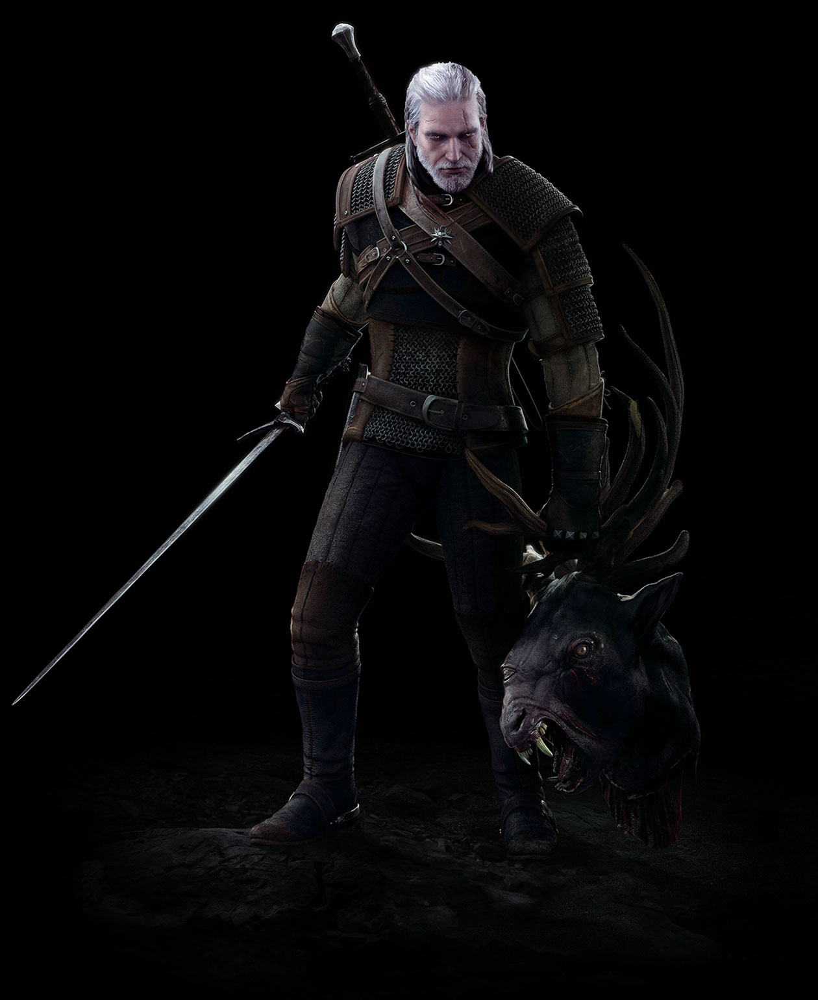
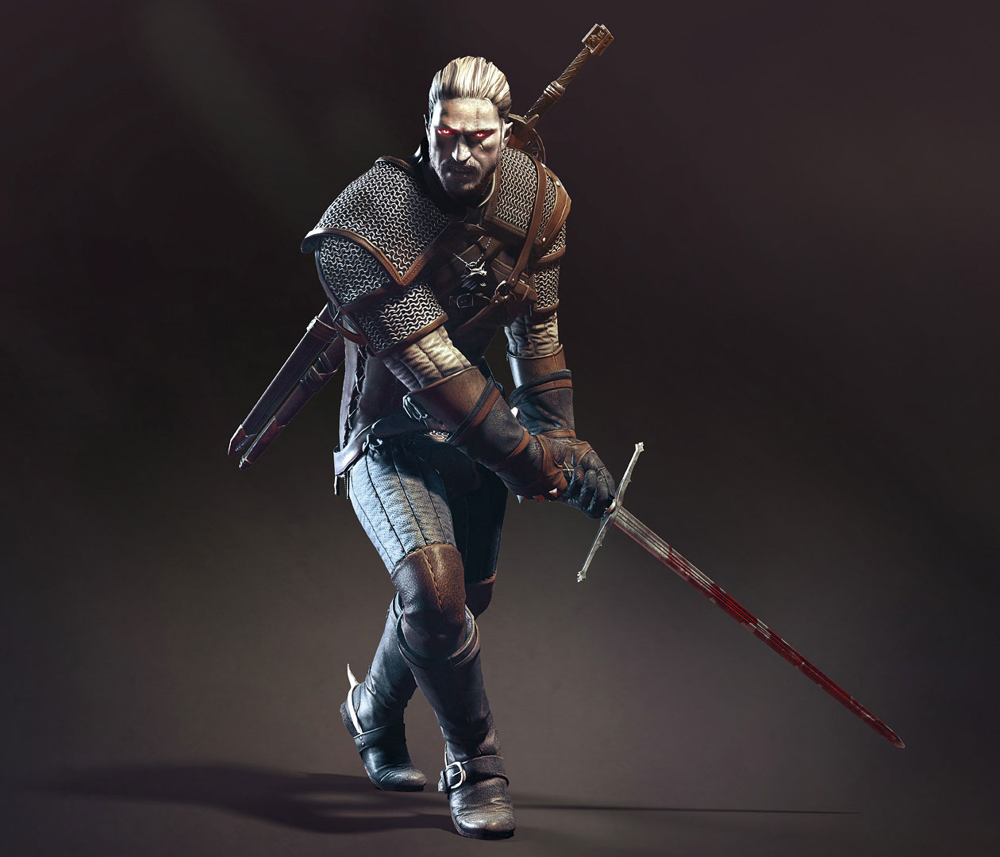

Character Bio: Geralt of Rivia.

"Evil is evil. Lesser, greater, middling... makes no difference."
1. General Information
- Full name: Geralt of Rivia
- Aliases: White Wolf, Gwynbleidd (in Elder Speech), Butcher of Blaviken
- Date of Birth: Around 1211 (according to recent book lore)
- Age: Over 50 (in books), nearly 100 (in the games)
- Profession: Witcher (professional monster hunter for hire)
2. Personality & Background
Origins: He was given to the School of the Wolf at Kaer Morhen by his mother, the sorceress Visenna. There, he underwent brutal training and mutations.
Appearance: Milk-white hair (due to additional mutations), pale skin, and golden cat-like eyes that allow him to see in the dark.
Beliefs: He tries to remain neutral in political conflicts, though he often ends up being forced to choose a side.
His famous motto: "Evil is evil. Lesser, greater, middling... makes no difference."

"People like to invent monsters and monstrosities, because then they feel less monstrous themselves."
3. Likes & Hobbies
- Loves: His adopted daughter Ciri, the sorceress Yennefer of Vengerberg, and his horse Roach (he names all his horses Roach).
- Hobbies: Playing Gwent (a card game), meditation, alchemy, and soaking in a hot bath.
- Favorite Activity: Slaying dangerous monsters for a fair bag of coin.
4. Dislikes & Fears
- Hates: Portals (they make him feel sick), politics, and people who treat witchers like freaks but beg for their help.
- Dislikes: Monsters that are sentient and peaceful (he often refuses to kill them).

“It may turn out said the white-haired man a moment later, that their comrades or cronies may ask what befell these evil men. tell them the wolf bit them. the white wolf. and add that they should keep glancing over their shoulders. one day they’ll look back and see the wolf.”